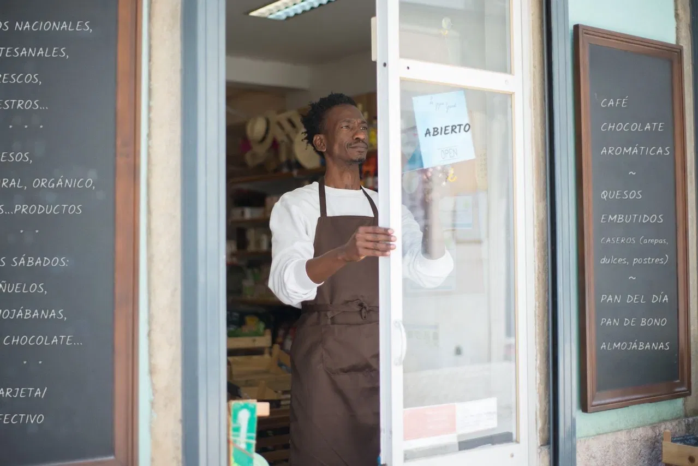

¿Quiénes somos?
En Trabajo Sí Hay creemos que Bogotá puede progresar si usamos la tecnología para unir a su gente. Somos una plataforma que conecta a los negocios de barrio con personas que buscan trabajo cerca de su casa.
Nacimos en Bosa, donde vimos que muchas personas necesitan trabajo y no saben cómo encontrar a quien las contrate, y muchos negocios necesitan colaboradores y no saben dónde buscarlos. Trabajo Sí Hay existe para que se encuentren.

Foto: Kampus Production, Pexels